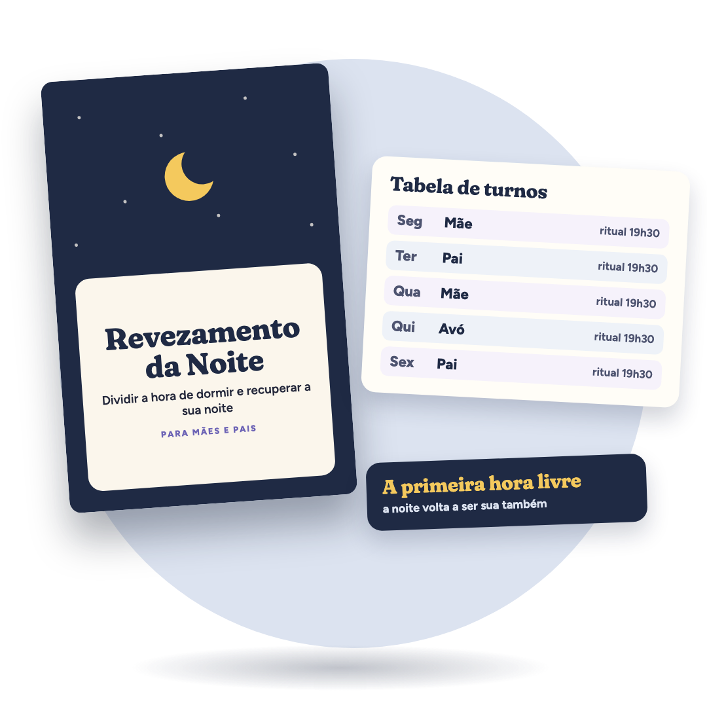

Seu Plano Modo Lua está garantido
Etapa 3 de 3
Falta um passo
A noite precisa voltar a ser sua também. E não dá para ser só sua tarefa.
Apresentadora criada com IA

Revezamento da Noite
Para você recuperar a sua noite, dividindo a hora de dormir com o parceiro ou com a rede de apoio.
- Tabela de turnos com o parceiro ou a rede de apoio, para cada noite ter um responsável.
- Roteiro da conversa: como falar do “sobra só pra gente” e combinar a divisão.
- O mesmo ritual com outro adulto: como quem reveza faz exatamente o mesmo passo a passo (a Sociedade Brasileira de Pediatria orienta que os pais usem a mesma estratégia).
- A primeira hora livre: como proteger a noite que volta a ser sua.
- O básico do sono do adulto: hábitos simples para você descansar melhor. Não é tratamento de insônia.
R$37
Pagamento único · Garantia de 7 dias
Se preferir não levar, toque em “Não, obrigada”. Seu Plano Modo Lua continua garantido e o acesso chega no seu e-mail.